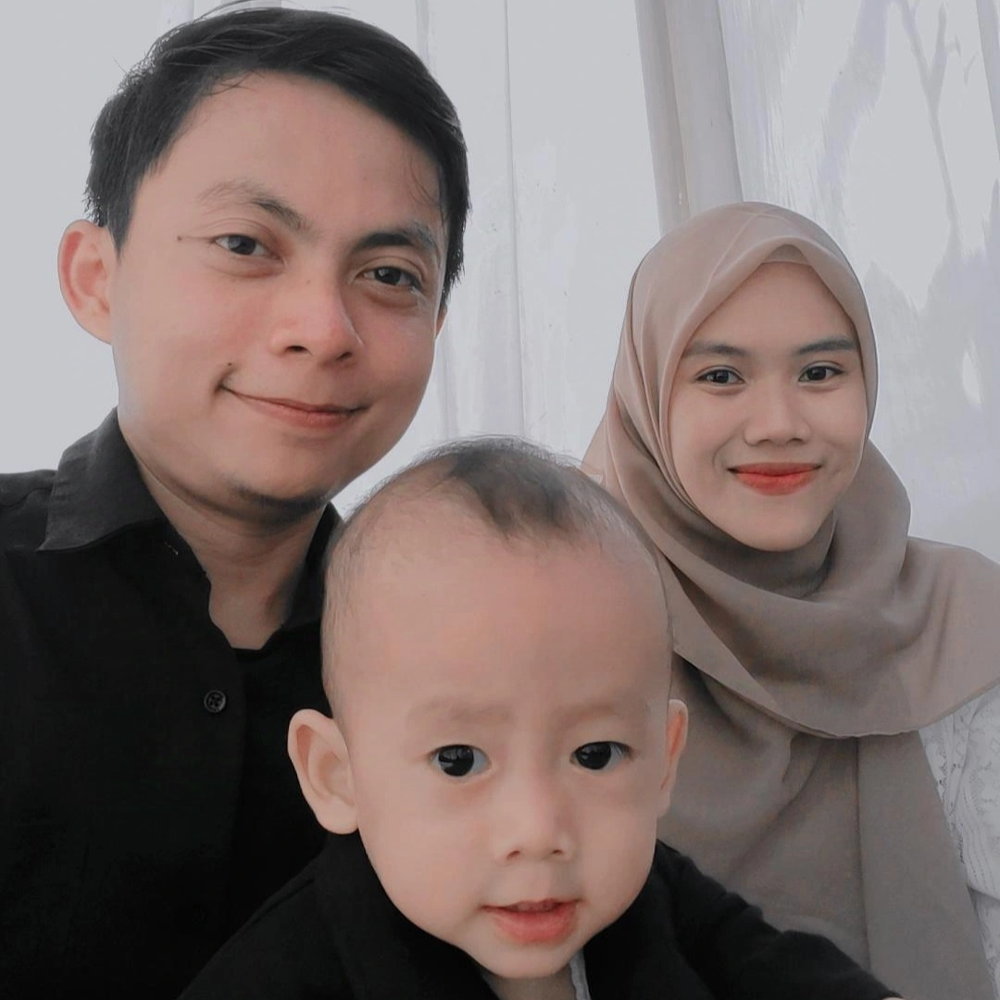
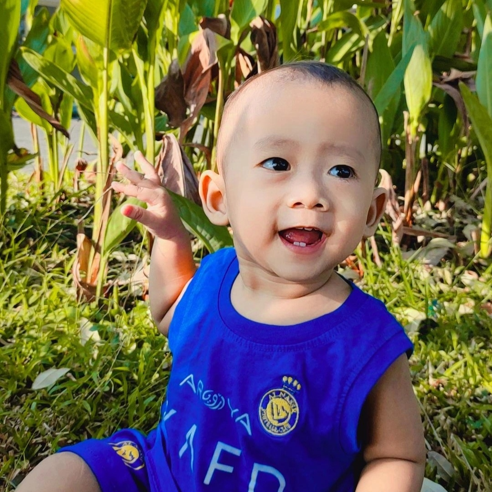
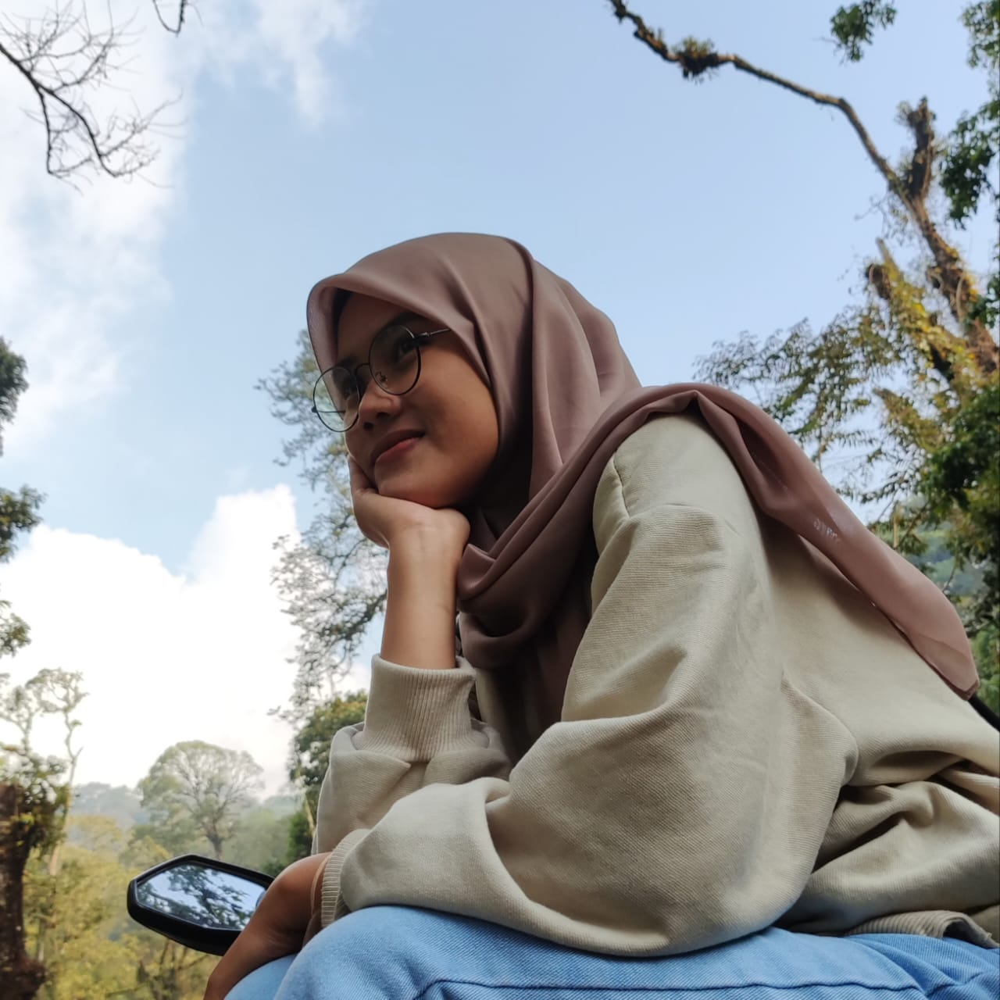

Selamat datang di Rumah Kecil Penuh Kekacauan!

Di sini, kamu akan menemukan petualangan sehari-hari kami yang penuh tawa dan kegembiraan—terutama dari si kecil yang selalu punya kejutan!
Dari proyek Enzo yang tidak pernah selesai, sampai bola biru yang jadi mainan favoritnya, semuanya ada di sini. Ibu yang hebat, ayah yang kadang bingung, dan Enzo yang lebih suka main bola daripada tidur—ini adalah tempat di mana kisah lucu kami tak pernah habis! Siap-siap tertawa ya!
Fahrenzo Birru Alhaitham

Seorang bayi berusia satu tahun adalah seorang penjelajah kecil yang penuh rasa ingin tahu, belajar mengenal dunia di sekitarnya dengan cara yang paling murni dan menyenangkan. Dunia baginya adalah tempat baru yang penuh keajaiban, di mana setiap sentuhan, suara, dan rasa menjadi pelajaran berharga. Ia mulai mengeksplorasi berbagai benda dengan tangan mungilnya, mencoba menggenggam, merasakan, bahkan mungkin mencicipi apa yang ada di depannya. Ketika melihat kerlip lampu, mendengar suara musik, atau merasakan tekstur lembut mainannya, ekspresi wajahnya berbinar penuh kekaguman.
Langkah pertamanya, meski terkadang goyah, adalah bukti keberanian dan semangat untuk tumbuh. Ia mengamati orang-orang di sekitarnya, terutama kedua orang tuanya, yang menjadi pusat dunia kecilnya. Setiap senyuman mereka, setiap kata yang diucapkan, menjadi dorongan untuknya belajar bicara dan mengenali emosi. Tawa lepasnya saat bermain kerupuk favorit menunjukkan betapa sederhana dan murninya kebahagiaan di usia ini. Meski kadang mogok makan dan memilih memalingkan wajah setelah dua suap, itu menjadi bagian dari prosesnya memahami rasa dan kebiasaan makan.
Ia juga belajar mengenal cinta dan perhatian melalui pelukan hangat ibunya atau canda tawa sang ayah. Dunia sosialnya mulai berkembang saat ia tersenyum pada orang baru, mencoba meniru gerakan, atau bahkan menangis ketika merasa tidak nyaman. Setiap hari adalah petualangan baru, dan setiap momen bersama Enzo adalah pengingat betapa berharganya tahap-tahap kecil dalam kehidupan manusia. Dunia mungkin terlihat besar dan menakutkan, tetapi di mata seorang bayi, ia adalah tempat yang penuh potensi dan kebahagiaan menanti untuk ditemukan.
Nurul Dwiyanti:
Istri Hebat, Ibu Luar Biasa

Nurul bukan hanya istri, tapi juga teman hidup yang selalu membuatku merasa lengkap. Dia adalah sosok luar biasa yang dengan sabar dan cinta merawat rumah, menjaga Enzo, dan tetap tersenyum meski aku hanya bisa pulang seminggu sekali.
Sebagai suami, aku sering merasa kagum dengan caranya menjalani hari-hari. Ia mampu menjadi ibu yang penuh kasih untuk Enzo, memastikan anak kami tumbuh sehat, ceria, dan pintar. Aku tahu tugas ini tidak mudah, apalagi ia juga menjaga rumah sambil menemani Akong yang tinggal bersama kami.
Ketika aku jauh, aku tahu ia tidak pernah sendiri. Rafa dan Rendi, keponakan kami, sering datang bermain dengan Enzo, membawa keceriaan di rumah. Tapi aku juga tahu, di balik tawa dan senyumnya, ada rindu yang ia simpan untukku.
Nurul, jika kamu membaca ini, aku ingin kamu tahu: aku sangat bersyukur memilikimu. Terima kasih telah menjadi istri yang kuat, ibu yang penuh cinta, dan rumah bagi hatiku. Aku pulang membawa rindu, tapi aku tahu di sini ada kamu yang menjadikan segalanya indah.
Momen Enzo & Ibu
"Satu Nasi, Dua Nasi, Lihat Burung!"
Makan bersama Enzo adalah momen yang selalu penuh kejutan. Suapan pertama berjalan mulus. Suapan kedua? Masih oke. Tapi begitu sendok ketiga datang, Enzo tiba-tiba melihat ke luar jendela, menunjuk-nunjuk, dan berkata, "Eh!"
Kami menoleh, mencari apa yang ia tunjuk. "Burung, ya?" tebak kami. Sambil tersenyum, ia melipat tangannya dengan tenang seolah berkata, "Sudah, cukup makan hari ini. Fokus kita ke burung saja sekarang."
Burungnya? Tidak ada. Hanya angin lewat. Tapi Enzo berhasil menghindari suapan berikutnya dengan cara yang sangat elegan.
"Tas Ibu adalah Dunia Baru"
Setiap kali ibunya lupa menyembunyikan tas make up, Enzo langsung menjadikannya proyek eksplorasi harian. Ia akan mengeluarkan lipstik dan mencoba membuka tutupnya (dengan cara menggigit, tentu saja). Eyeliner? Itu pasti mainan pesawat yang harus terbang di atas sofa.
Saat ibunya menemukan dia dalam aksi, Enzo hanya tertawa kecil dan mengangkat kuas bedak seperti ingin berkata, "Aku cuma mau bantu, Bu." Hasilnya? Ruang tamu penuh bedak, dan Enzo puas dengan look barunya: ala bayi kabur dari salon.
"Botol? No. Gelas? Yes."
Enzo sudah memutuskan sejak dini: botol itu untuk bayi kecil. Dia hanya mau minum dari gelas, seperti orang dewasa. Setiap kali gelasnya dipegang, ia akan memasang ekspresi serius sambil menyesap perlahan. Tapi, aksi minumnya sering diikuti dengan sedikit tumpahan di baju.
Saat kami menawarkan botol susu, ia akan menggeleng kuat-kuat. "Aku sudah besar, jangan botol lagi!" protesnya tanpa suara. Kadang, ketika gelasnya kosong, ia akan mengetuknya di meja seperti orang minta refill kopi di kafe.
"Bantu Beres-Beres, Katanya..."
Enzo suka sekali membereskan barang-barang. Tapi konsep “beres” menurutnya sedikit berbeda. Buku di rak diturunkan, mainan di keranjang dihamburkan, dan kaus kaki ayah dipindahkan ke bawah sofa. Saat kami menatapnya, ia hanya menunjuk-nunjuk mainan yang berserakan sambil tersenyum, seperti ingin berkata, "Lihat, rapi kan? Semua sudah keluar dari tempatnya!"
Dan begitulah, rumah kami selalu punya gaya berantakan yang artistik berkat si kecil.
Tugas Enzo
"Tes Ketahanan Mainan dengan Gigit-Gigit Maksimal"
Pastikan semua mainan lulus uji gigitan dan tahan air liur.
"Peluk Mainan, Lempar, Lalu Menangis Memintanya Kembali"
Strategi baru untuk melihat seberapa sabar ibu merespons.
"Penjelajahan Lemari yang Terbuka"
Bongkar semua isi lemari, lalu kabur sebelum tertangkap.
"Teriakan Ultra: Alarm Otomatis Tanpa Baterai"
Uji suara di tengah malam untuk memastikan semua terbangun.
"Mencicipi Dunia: Semua Benda Masuk Mulut"
Dari remote TV hingga ujung sepatu, semua perlu dicoba!
Resep Favorit Enzo
Berikut adalah 15 resep makanan favorit bayi yang lezat dan bergizi:
- Puree Wortel dan Kentang: Rebus wortel dan kentang, haluskan dengan sedikit air.
- Bubur Alpukat Pisang: Campur alpukat matang dan pisang, haluskan hingga lembut.
- Sup Labu Kuning: Rebus labu kuning dengan kaldu ayam, haluskan hingga lembut.
- Telur Dadar Bayi: Kocok telur, tambahkan keju parut, masak di atas api kecil.
- Puree Apel dan Pir: Kukus apel dan pir, blender hingga halus.
- Nasi Tim Ayam: Masak nasi dengan kaldu ayam, tambahkan ayam cincang dan sayur.
- Bola Ubi Manis: Kukus ubi, bentuk bola kecil, sajikan.
- Puree Bayam dan Tahu: Rebus bayam dan tahu, blender dengan sedikit air.
- Bubur Oat Pisang: Masak oatmeal dengan susu, tambahkan pisang yang dihaluskan.
- Puree Kacang Merah: Rebus kacang merah hingga lunak, haluskan dengan sedikit air.
- Sup Jagung Manis: Rebus jagung manis, haluskan, tambahkan sedikit kaldu ayam.
- Roti Kukus Keju: Potong roti kecil-kecil, taburi keju parut, kukus sebentar.
- Yogurt Buah: Campur yogurt plain dengan puree buah favorit bayi.
- Bola Kentang Sayur: Rebus kentang, tambahkan sayur cincang, bentuk bola kecil.
- Pancake Mini Pisang: Campur pisang lumat, sedikit tepung, goreng kecil-kecil.
Kamus Bahasa Enzo
Pernah bingung dengan kata-kata bayi? Berikut terjemahannya:
- "Ma-ma-ma!": Aku lapar, ma. Cepetan makanannya!
- "Da-da-da!": Ayah, ajak main! Jangan sibuk dengan HP terus!
- "Bwaaaahh!": Aku bosan, kasih aku sesuatu yang seru!
- "Eh-eh-eh!": Ada sesuatu di popokku, tolong dicek, deh.
- "Ngeng-ngeng!": Aku suka mobil atau motor. Bawa aku jalan-jalan!
- "Tat-ta!": Lihat aku pintar melambaikan tangan. Bye-bye!
- "Mmm...nom nom!": Kerupuk mana kerupuk? Aku sudah siap makan!
- "Aaaaaaahhh!": Perhatikan aku! Jangan sibuk ngobrol, ya!
- "Guk-guk!": Itu anjing, kan? Aku suka binatang itu!
- "Naaa-naaa!": Aku mau nenen! Kok nggak dikasih-kasih?
- "Dum-dum-dum!": Aku main drum imajiner, lihat aku bakat musik!
- "Baba-baba!": Balon atau botol, pokoknya benda bundar favoritku!
- "Pffttt...": Aku bosan. Lihat aku bikin gelembung ludah, seru kan?
- "Wheee!": Aku sedang menikmati momen! Lihat senyumanku.
- "Kaaa!": Lihat burung di sana, itu suara burung, kan?
- "Mamam!": Bukan hanya makanan, aku mau kerupuk juga, ya!
- "Gaaaahhh!": Aku ngantuk tapi nggak mau tidur. Hiburlah aku!
- "Ngeeeh!": Itu mainanku! Jangan diambil, aku nggak suka.
- "Tok-tok-tok!": Aku ketok-ketok lantai, apa suaranya lucu?
- "Yaaayyy!": Aku bahagia! Terus temani aku bermain, ya!
Diary Ibu Hebat
Catatan kecil seorang ibu yang terus belajar setiap hari:
Hari ini, aku melihat bayi kecilku belajar hal baru lagi. Ia melambaikan tangan kecilnya, tersenyum sambil berkata sesuatu yang hanya kami berdua yang bisa mengerti. Mungkin itu kata "terima kasih" dalam bahasanya. Aku tertawa, lalu aku teringat, betapa dulu aku takut menghadapi peran ini. Takut tidak menjadi cukup baik.
Setiap pagi, aku bangun untuk menyaksikan senyummu. Aku lupa rasa lelah, lupa mata yang mengantuk, karena tawa kecilmu adalah obat paling mujarab. Bahkan ketika kamu hanya makan dua suap hari ini, aku tetap bangga, karena aku tahu, kita melangkah sedikit lebih maju dari kemarin.
Di balik semua itu, ada cinta yang tak pernah habis. Cinta untuk suamiku yang terus berusaha menjadi ayah terbaik, meski kadang sedikit kaku saat mengganti popok. Cinta untuk diriku sendiri, yang mulai percaya bahwa aku cukup kuat untuk menghadapi semuanya. Dan tentu saja, cinta untuk kamu, nak, yang menjadi alasan terindah kami untuk terus berjuang.
Terima kasih, ya, sudah mengajarkan Ibu banyak hal. Mengajarkan arti sabar, arti bersyukur, dan arti bahagia dalam hal-hal kecil. Kamu adalah guru terbaikku. Aku mungkin tidak sempurna, tapi aku janji akan menjadi ibu yang selalu ada untukmu.
Hari ini, aku belajar lagi. Hidup mungkin tidak selalu mudah, tapi cinta keluarga ini membuat semuanya menjadi berharga.
- Ibumu yang selalu mencintaimu
Diary Enzo untuk Ibu
Catatan kecilku untuk ibu tercinta:
Halo Ibu,
Hari ini aku ingin bilang sesuatu yang belum bisa aku ucapkan dengan kata-kata. Tapi aku harap, lewat senyum kecilku, tepuk tanganku, dan tatapan mataku, Ibu bisa mengerti bahwa aku sangat mencintaimu.
Terima kasih sudah bangun lebih pagi dari siapa pun untuk menyiapkan semuanya. Aku tahu, kadang aku suka bangun tengah malam dan mengganggu tidur Ibu, tapi Ibu tetap datang dengan senyum, memelukku, dan membuatku merasa aman. Aku nggak tahu bagaimana cara membalas itu semua, jadi aku cuma bisa memelukmu erat.
Terima kasih juga karena Ibu nggak pernah menyerah saat aku cuma makan dua suap. Aku tahu itu bikin Ibu sedih, tapi aku janji suatu hari nanti aku akan makan lebih banyak, supaya Ibu nggak khawatir lagi.
Dan aku mau bilang, aku bangga punya ibu sepertimu. Kamu selalu sabar ketika aku rewel, selalu menciumku meskipun bajuku sudah belepotan bubur. Aku bahagia sekali ketika Ibu tertawa saat aku menirukan suara-suara lucu. Rasanya aku jadi anak paling hebat di dunia!
Ibu, aku tahu aku masih kecil, masih belajar banyak hal, dan mungkin aku belum bisa bilang "aku sayang Ibu" dengan jelas. Tapi suatu hari nanti, aku janji akan membuat Ibu lebih bangga lagi. Untuk sekarang, aku cuma ingin bilang terima kasih. Karena Ibu, hidupku terasa hangat, aman, dan penuh cinta.
- Anak kecilmu yang mencintaimu lebih dari apa pun
Kuis: Siapa yang Paling Sayang Enzo?
Selamat datang di kuis yang akan mengungkap siapa yang paling sayang si kecil! Pilih jawaban yang paling tepat dan temukan hasilnya di akhir!